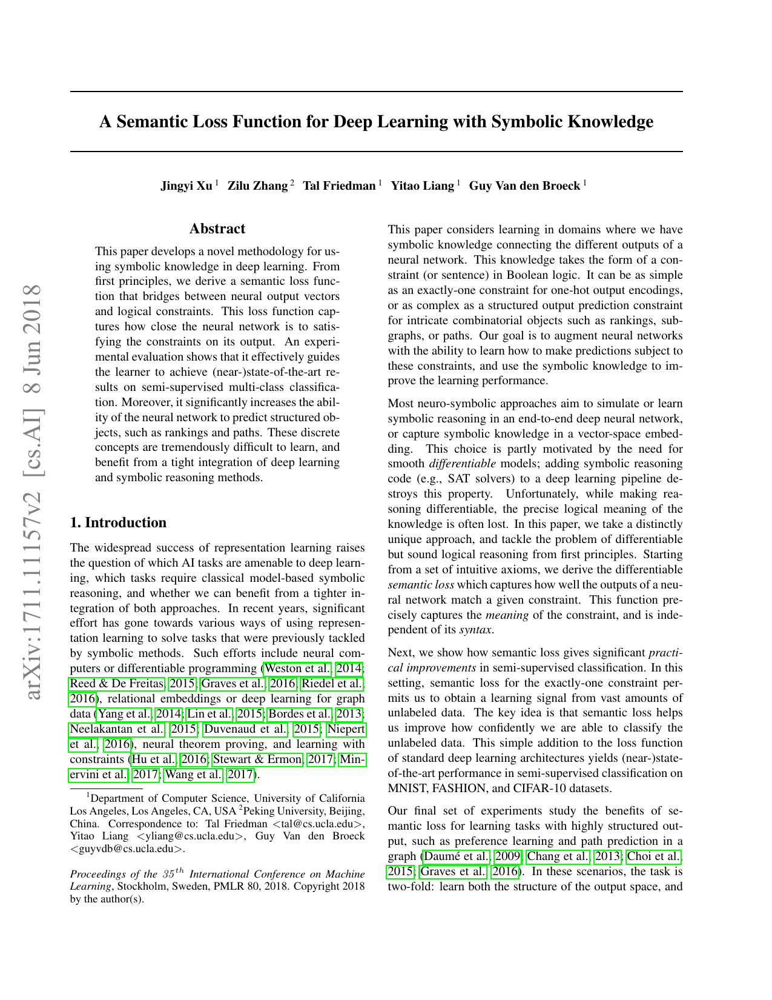
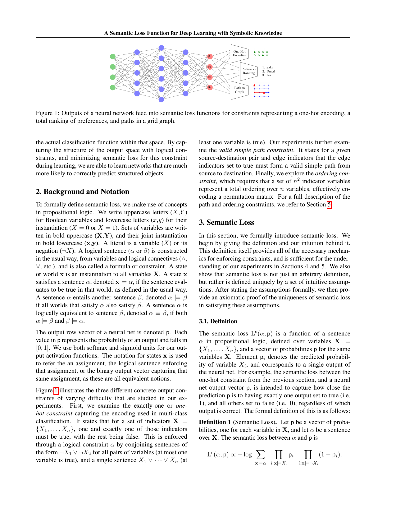

Citation and Scope
- Paper: A Semantic Loss Function for Deep Learning with Symbolic Knowledge (Xu et al., ICML 2018)
- In this note,
Semantic Lossrefers specifically to the 2018 formulation in which a propositional constraint $\phi$ is converted into a trainable loss through the total probability mass of its satisfying Boolean assignments.
This note places the paper in the following reading path:
Hu et al. 2016:rule -> teacher distribution -> studentSemantic Loss:rule -> exact semantic loss -> parameter updateDL2:constraint language -> differentiable surrogate / feasible set -> training + querying
The main contribution is therefore not simply that logic appears in training, but that:
- no teacher distribution is introduced;
- no local soft-truth score is used as the central objective;
- the optimization target is the exact probability mass of satisfying worlds.
Problem Setting
Let the training set be $$ \mathcal D=\{(x_n,y_n)\}_{n=1}^N. $$
For an input sample $x$, the network outputs a collection of Boolean variables $$ X=(X_1,\dots,X_m), $$ with an independent Bernoulli parameterization $$ p=(p_1,\dots,p_m),\qquad p_i=P(X_i=1\mid x). $$
The output space is the Boolean cube $$ \mathcal X=\{0,1\}^m. $$
For a concrete Boolean assignment $$ \mathbf b=(b_1,\dots,b_m)\in\{0,1\}^m, $$ its probability under the current network is $$ P_p(\mathbf b)=\prod_{i:b_i=1}p_i\prod_{i:b_i=0}(1-p_i). $$
Three points are worth keeping explicit:
Bernoullimeans that each $X_i$ is a binary random variable.Probability vectormeans that the network outputs one probability per bit, rather than one categorical distribution over classes.Independentmeans that the probability of a full Boolean world is constructed multiplicatively from the bitwise marginals.
Independent Bernoulli vs. Softmax
This distinction is essential for understanding why the exactly-one constraint is meaningful here.
If the final layer uses softmax with logits $$ z=(z_1,\dots,z_m)\in\mathbb R^m, $$ then the output is $$ \pi_i=\frac{e^{z_i}}{\sum_{j=1}^m e^{z_j}}, \qquad i=1,\dots,m, $$ with $$ \pi_i>0,\qquad \sum_{i=1}^m \pi_i=1. $$
This parameterizes a single categorical variable $$ Y\in\{1,\dots,m\}, \qquad \pi_i=P(Y=i\mid x), $$ so the “choose exactly one class” structure is already built into the architecture.
By contrast, Semantic Loss in this setting assumes $m$ Boolean output bits. The network may assign nontrivial probability to many invalid worlds, and the logical constraint must explicitly suppress them.
exactly-one and One-Hot Legal Worlds
For Boolean outputs
$$
X=(X_1,\dots,X_m),\qquad X_i\in\{0,1\},
$$
the Its arithmetic meaning is
$$
\sum_{i=1}^m b_i=1,\qquad b_i\in\{0,1\}.
$$ The satisfying worlds are precisely the one-hot Boolean assignments. For $m=4$, they are
$$
(1,0,0,0),\ (0,1,0,0),\ (0,0,1,0),\ (0,0,0,1).
$$ This is not the same object as a softmax probability vector. Here, a one-hot vector is a concrete Boolean world in the output space, not a probability distribution over classes. If softmax is imposed from the outset, the semantic content of If training relies only on standard supervision, the objective is typically written as
$$
\min_\theta \frac1N\sum_{n=1}^N \ell\bigl(y_n,p_\theta(\cdot\mid x_n)\bigr).
$$ For classification, the single-example loss is often
$$
\ell\bigl(y_n,p_\theta(\cdot\mid x_n)\bigr)
=
-\log p_\theta(y_n\mid x_n).
$$ This objective only requires the model to fit observed labels on labeled examples. It does not directly require logical consistency over the entire output space. As a result, standard supervision alone does not force the model to learn statements such as: This is precisely where Semantic Loss enters: even when labels are unavailable, a known logical constraint $\phi$ can still provide training signal. For a propositional formula $\phi$, write
$$
\mathbf b \models \phi
$$
when the Boolean assignment $\mathbf b$ satisfies $\phi$. The total probability mass of satisfying worlds is
$$
P_p(\phi)
=
\sum_{\mathbf b \models \phi} P_p(\mathbf b)
=
\sum_{\mathbf b \models \phi}
\prod_{i:b_i=1}p_i\prod_{i:b_i=0}(1-p_i).
$$ Semantic Loss is then defined as
$$
L_s(\phi,p)=-\log P_p(\phi).
$$ This can be read in four steps: A compact computation chain is
$$
x_n
\Longrightarrow
p
\Longrightarrow
\phi
\Longrightarrow
\{\mathbf b\in\{0,1\}^m:\mathbf b\models\phi\}
\Longrightarrow
P_p(\phi)
\Longrightarrow
L_s(\phi,p).
$$ Relative to LogicNet, the key difference is that no teacher distribution $q^\star$ is constructed. The rule enters the optimization objective directly. The loss depends on the set of satisfying assignments, not on the syntactic form of the formula. If
$$
\phi \equiv \psi,
$$
then
$$
L_s(\phi,p)=L_s(\psi,p).
$$ This is the sense in which the construction is semantic rather than merely syntactic. The term
$$
P_p(\phi)
$$
can be interpreted as the probability that a sample drawn from the current output distribution is logically valid. Therefore
$$
-\log P_p(\phi)
$$
is the surprisal of obtaining a valid world. This yields the expected behavior: The construction is motivated by a set of natural desiderata and is essentially unique up to a positive multiplicative constant. The relevant properties are: Monotonicity Semantic invariance Consistency with ordinary label loss Continuity and differentiability Taken together, these properties explain why the construction is both logically meaningful and optimization-compatible. Consider the recurring example used throughout these notes: Suppose the current network outputs
$$
p=(0.7,\,0.2,\,0.1,\,0.1).
$$ The four legal one-hot worlds have probabilities
$$
P_p(1,0,0,0)=0.7\times 0.8\times 0.9\times 0.9=0.4536,
$$
$$
P_p(0,1,0,0)=0.3\times 0.2\times 0.9\times 0.9=0.0486,
$$
$$
P_p(0,0,1,0)=0.3\times 0.8\times 0.1\times 0.9=0.0216,
$$
$$
P_p(0,0,0,1)=0.3\times 0.8\times 0.9\times 0.1=0.0216.
$$ Hence
$$
P_p(\phi_{\mathrm{exo}})
=
0.4536+0.0486+0.0216+0.0216
=
0.5454.
$$ The corresponding Semantic Loss is
$$
L_s(\phi_{\mathrm{exo}},p)=-\log(0.5454)\approx 0.606.
$$ The crucial point is that the current network has not yet concentrated almost all mass on legal worlds. The remaining mass
$$
1-0.5454=0.4546
$$
still lies on invalid assignments, for example
$$
P_p(0,0,0,0)=0.3\times 0.8\times 0.9\times 0.9=0.1944,
$$
$$
P_p(1,1,0,0)=0.7\times 0.2\times 0.9\times 0.9=0.1134.
$$ This is the precise meaning of the phrase “push probability mass toward legal one-hot worlds.” For $m$ Boolean variables, the satisfying mass is
$$
P_p(\phi_{\mathrm{exo}})
=
\sum_{i=1}^m p_i\prod_{j\ne i}(1-p_j),
$$
so the loss becomes
$$
L_s(\phi_{\mathrm{exo}},p)
=
-\log \sum_{i=1}^m p_i\prod_{j\ne i}(1-p_j).
$$ This is the form most frequently used in the paper’s semi-supervised multiclass experiments. Now consider
$$
p=(0.9,\,0.8,\,0.1,\,0.1).
$$ Then
$$
\begin{aligned}
P_p(\phi_{\mathrm{exo}})
&=
0.9(1-0.8)(1-0.1)(1-0.1)\\
&\quad+(1-0.9)0.8(1-0.1)(1-0.1)\\
&\quad+(1-0.9)(1-0.8)0.1(1-0.1)\\
&\quad+(1-0.9)(1-0.8)(1-0.1)0.1\\
&=
0.1458+0.0648+0.0018+0.0018\\
&=0.2142.
\end{aligned}
$$ Therefore
$$
L_s(\phi_{\mathrm{exo}},p)=-\log(0.2142)\approx 1.541.
$$ This illustrates the mechanism clearly: The most direct objective is
$$
L(\theta)
=
L_{\mathrm{task}}(\theta)
+\beta\,L_s(\phi,p_\theta(x)),
$$
where In a semi-supervised setting, this can be written more explicitly as
$$
L(\theta)
=
\frac1{|\mathcal D_L|}
\sum_{(x_n,y_n)\in\mathcal D_L}
\ell\bigl(y_n,p_\theta(\cdot\mid x_n)\bigr)
+
\beta
\frac1{|\mathcal D_U|}
\sum_{x_n\in\mathcal D_U}
L_s\bigl(\phi,p_\theta(x_n)\bigr).
$$ The interpretation is direct: This is the main contrast with LogicNet. LogicNet follows the route
$$
x
\Longrightarrow
p_\theta(x)
\Longrightarrow
q^\star(\cdot\mid x)
\Longrightarrow
\text{distillation}
\Longrightarrow
\theta.
$$ Semantic Loss instead follows
$$
x
\Longrightarrow
p_\theta(x)
\Longrightarrow
L_s(\phi,p_\theta(x))
\Longrightarrow
\nabla_\theta L_s
\Longrightarrow
\theta.
$$ The rule is inserted directly into the loss, rather than first being converted into an intermediate teacher. Semantic Loss does not ask: How strongly is a local rule violated at the current output? It asks: Under the current output distribution, how much total probability mass lies on assignments that satisfy the entire constraint? Therefore, the optimized object is
$$
P_p(\phi),
$$
not a local relaxed truth value such as
$$
r_\phi(u,v).
$$ This produces a globally coupled objective: Consider again an unlabeled sample with
$$
p=(0.9,0.8,0.1,0.1).
$$ Even without knowing its class label, the model is penalized because
$$
L_s(\phi_{\mathrm{exo}},p)\approx 1.541.
$$ The signal is structural rather than categorical: This is the core reason Semantic Loss can use unlabeled data in semi-supervised settings. Under independent Bernoulli outputs, the network defines a full distribution over $\{0,1\}^m$. Training with Semantic Loss redistributes this mass: The mechanism is not “declare that there should be one class.” It is “alter the full Boolean-world distribution so that legal worlds receive most of the mass.” Another useful interpretation is probabilistic: This connects the logic directly to a standard probabilistic training objective. exactly-one constraint is
$$
\phi_{\mathrm{exo}}
=
\left(X_1\vee\cdots\vee X_m\right)
\wedge
\bigwedge_{iexactly-one is largely weakened, because the architecture already encodes a single categorical choice. Under independent Bernoulli outputs, the constraint remains substantive.Why Ordinary Supervised Loss Is Not Enough
Core Idea
Mathematical Formulation
Why the Loss Is “Semantic”
Why the Loss Uses a Negative Logarithm
Axiomatic Perspective
If
$$
\phi \models \psi,
$$
then $\phi$ is a stronger constraint, so
$$
L_s(\phi,p)\ge L_s(\psi,p).
$$
If
$$
\phi \equiv \psi,
$$
then
$$
L_s(\phi,p)=L_s(\psi,p).
$$
For a single literal,
$$
L_s(X,p)=-\log p,\qquad
L_s(\neg X,p)=-\log(1-p).
$$
Thus standard cross-entropy appears as a degenerate special case of Semantic Loss.
For fixed $\phi$, the loss remains continuous in the Bernoulli parameters and is differentiable almost everywhere, so it can be inserted into gradient-based training.Running Example:
exactly-one
exactly-one
World Type
Definition
Total Mass
Legal worlds
Worlds satisfying
exactly-one0.5454
Illegal worlds
All remaining worlds
0.4546Closed Form for
exactly-oneA More Obviously Invalid Output
Optimization Perspective
Training Objective
Why No Teacher Distribution Is Needed
What Is Actually Being Optimized
exactly-one, but quickly becomes heavier for paths, rankings, and other combinatorial constraints.Why Unlabeled Samples Still Produce Gradients
Intuition and Interpretation
Semantic Loss as Probability Redistribution
Semantic Loss as Event Surprisal
Figure 1: What Counts as the Constrained Object
The main point of Figure 1 is not the visual layout. It is the choice of output structures:
- one-hot encoding
- preference ranking
- path in graph
The paper is therefore aimed at outputs with discrete internal structure, not only at ordinary flat classification.
Figure 2: Why Unlabeled Data Can Matter

Figure 2 provides the most intuitive semi-supervised reading:
- without Semantic Loss, a classifier mainly follows the few labeled points;
- with Semantic Loss, unlabeled points also constrain the shape of the solution because their outputs are required to be structurally valid;
- the decision boundary is therefore pushed toward a region that better respects the output structure.
Comparison with Other Methods
Semantic Loss vs. LogicNet
| Aspect | LogicNet | Semantic Loss |
|---|---|---|
| Rule interface | posterior projection | direct loss term |
| Intermediate object | teacher distribution $q^\star$ | no intermediate teacher |
| Optimization route | project distribution, then distill | update parameters directly |
| Numerical object | soft truth / rule energy in a projected posterior | total probability mass of satisfying worlds |
| Semantic focus | posterior after rule correction | exact satisfying mass |
Compressed into one line:
LogicNet: modify the distribution first, then modify the parameters.Semantic Loss: modify the parameters directly through a logic-derived loss.
Semantic Loss vs. DL2
| Aspect | Semantic Loss | DL2 |
|---|---|---|
| Logic object | set of satisfying assignments | declarative constraint formula |
| Numerical form | total satisfying probability mass | continuous surrogate violation or feasible-set objective |
| Semantic precision | high; retains exact logical meaning | depends on the surrogate design |
| Gradient geometry | globally coupled | more local, piecewise, and design-dependent |
| Main bottleneck | logic compilation and counting complexity | surrogate design and inner search |
More plainly:
- Semantic Loss optimizes the probability of landing in the legal region.
- DL2 more often optimizes the magnitude of continuous constraint violation or a search-based feasible-set objective.
A Useful Three-Way Compression
The relation among the three methods can be summarized as $$ \text{LogicNet}: \phi \to q^\star \to \theta,\qquad \text{Semantic Loss}: \phi \to L_s \to \theta,\qquad \text{DL2}: \phi \to \Psi_\phi \text{ or } \mathcal C_\phi \to \theta. $$
Why the Method Can Be Effective
Semi-Supervised Classification
In semi-supervised learning, unlabeled samples do not provide direct label supervision. Semantic Loss still extracts a weaker but useful signal:
- outputs should resemble valid structured objects;
- outputs should not place arbitrary mass on logically inconsistent worlds.
For one-hot classification, this encourages more concentrated and structurally consistent predictions even without class labels.
Structured Outputs
For path, ranking, and related tasks, ordinary supervised loss often has to learn two things simultaneously:
- what the legal output structure is;
- which legal output should be selected.
Semantic Loss fixes the first part explicitly through logical constraints. The network can then focus more directly on discrimination within the legal region.
Limitations and Insights
Computation Can Dominate
The defining formula is elegant: $$ L_s(\phi,p)=-\log\sum_{\mathbf b\models\phi}P_p(\mathbf b), $$ but the difficult step is often not differentiation. It is the computation of the satisfying mass itself.
The practical questions are:
- how many satisfying assignments exist;
- whether they can be enumerated or compiled efficiently;
- whether weighted model counting or related compilation machinery is required.
For exactly-one, the expression simplifies to
$$
\sum_{i=1}^m p_i\prod_{j\ne i}(1-p_j),
$$
which is cheap. For richer logical structures, the cost may become the central issue.
Best Suited to Propositional Discrete Structures
The method is most natural for:
- propositional logic;
- Boolean output variables;
- structured output spaces with discrete combinatorial constraints.
It is less natural for:
- complex quantified logic;
- deep first-order relational structure;
- predominantly continuous constraints;
- very large combinatorial spaces without efficient counting structure.
Exact Semantics Does Not Guarantee Easy Optimization
Semantic precision means that the loss corresponds exactly to the satisfying mass. It does not guarantee that:
- gradients are local;
- optimization is numerically easy;
- the compiled representation is cheap;
- the constraint is correct for the task.
If the prior constraint is wrong, Semantic Loss will still push the model toward the wrong region with full consistency.
Core Insight
The central tradeoff can be expressed compactly:
The more faithfully logical meaning is preserved, the heavier the computation of satisfying mass tends to become.
Repository Alignment
The repository already contains a direct toy reproduction:
The implementation corresponds directly to the definition above:
- enumerate legal assignments;
- compute each assignment’s log-probability;
- aggregate them with
logsumexp.
In formula form, $$ \log P_p(\phi) = \log\sum_{\mathbf b\models\phi}\exp\bigl(\log P_p(\mathbf b)\bigr), $$ where $$ \log P_p(\mathbf b) = \sum_{i:b_i=1}\log p_i+\sum_{i:b_i=0}\log(1-p_i). $$
The use of logsigmoid and logsumexp is simply the numerically stable implementation of the same semantic definition.
Minimal Reproduction Suggestions
The most stable starting point is exactly-one, because it is simultaneously:
- semantically transparent;
- easy to compute by hand;
- naturally matched to semi-supervised one-hot classification;
- already aligned with the repository toy example.
A minimal reproduction path is:
- fix a 4-bit output;
- use
sigmoidto obtain four independent Bernoulli probabilities; - train a baseline model;
- add
exactly-oneSemantic Loss; - compare training curves, constraint satisfaction, decision boundaries, and prediction concentration on unlabeled samples.
Three especially useful controls are:
baselinevs.exactly_oneexactly_onevs.at_least_oneexactly_onevs.exactly_two_bad
These comparisons help isolate the effect of correct, weaker, and incorrect prior knowledge.
Condensed Takeaway
The paper can be reduced to four steps:
- treat a logical formula $\phi$ as a set of satisfying worlds;
- compute the total probability mass that the current network assigns to those worlds;
- define $$ L_s(\phi,p)=-\log P_p(\phi); $$
- optimize $$ L(\theta)=L_{\mathrm{task}}(\theta)+\beta\,L_s(\phi,p_\theta(x)). $$
The central question answered by Semantic Loss is:
How can the requirement “the output must satisfy a discrete logical structure” be written directly and exactly as a trainable loss?
The central cost is equally clear:
Exact logical semantics often shifts the difficulty from differentiation to the computation of satisfying probability mass.